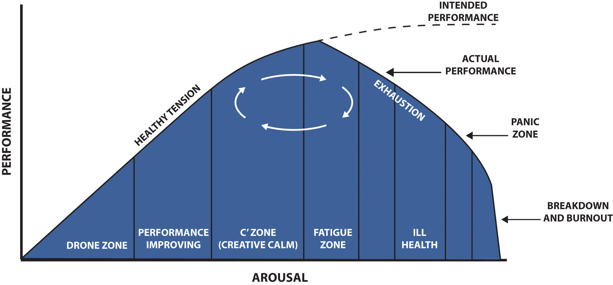

Stress can be challenging to explain, because it means different things to different people. For example, going swimming might be stressful to some, but for others, it might be enjoyable. Stress affects our ability to relate to others because too much stress cause us to be irritable, which affects our communication skills. We will discuss more later on the effects of stress and human relations.
Hans SelyeThe American Institute of Stress, “Stress, Definition of Stress,” accessed February 15, 2012, http://www.stress.org/daily-life/ defined stressThe nonspecific response of the body to a demand for a change. as the nonspecific response of the body to a demand for a change. In 1936, Selye researched this topic and discovered something surprising. When subjecting lab animals to acute but noxious physical and emotional stimuli—such as blaring light, loud noises, extreme heat or cold, or frustration—they all experienced the same physical symptoms of stress, such as the enlargement of the adrenal glands. He saw that these intense stresses over long periods of time caused other issues such as heart attacks, strokes, and kidney disease. His conclusion was that stress actually caused these conditions,The American Institute of Stress, “Stress, Definition of Stress,” accessed February 15, 2012, http://www.stress.org/daily-life/ not the stimuli themselves. Today, we usually define stress as the body’s way of responding to a demand. For example, if you are stuck in traffic and are going to be late for school, this may create stress. Having two tests in one day may cause stress as you try to find time to study for both. Likewise, you can feel stress in a difficult personal relationship with a family member or a significant other. Other definitions of stress include the internal reaction to a situation that could disturb a person’s well-being.
There are four types of stress. The first type of stress is called acute stressThe most common form of stress and normally comes from demands and pressures of the past and future demands.. This is the most common form of stress and normally comes from demands and pressures of the past and future.American Psychological Association, “Stress: The Different Kinds,” accessed February 15, 2012, http://www.apa.org/helpcenter/stress-kinds.aspx This kind of stress tends to be short term. For example, suppose you have a busy day. You have to drop your niece and nephew at school, stop by the post office, go to class, take a quiz, get an oil change, pick your niece and nephew up from school, drive home through traffic, and make dinner. A busy day such as this can create stress, but it is short term, because perhaps tomorrow you are less busy or are looking forward to the weekend where you don’t have as much to do. Every person experiences this kind of stress. Acute stress is a laundry list of the things we must do or a list of the things that didn’t go right. For example, if your car breaks down on the way to the post office, this creates a certain amount of acute stress, but once the car is fixed there is no stress associated with it.
Episodic acute stressCan be a more serious form of acute stress; the person feels stress on a daily basis and rarely gets relief. is a more serious form of acute stress. In this type of stress, the person feels stress on a daily basis and rarely gets relief.American Psychological Association, “Stress: The Different Kinds,” accessed February 15, 2012, http://www.apa.org/helpcenter/stress-kinds.aspx Unlike acute stress, where there may be one or two busy, stressful days, episodic acute stress happens on a daily basis. The person who suffers from episodic acute stress feels stressed constantly with little relief. You have probably met these people. They may constantly complain about how much work they have and may be constantly late or always in a rush and may be anxious and irritable on a regular basis. Often, a person who suffers from this type of stress may have taken on too much and created self-imposed demands.
Chronic stressThis is long-term stress where people see little way out of a situation. is the type of stress that happens month after month, year after year. This is long-term stress where people see little way out of a situation.American Psychological Association, “Stress Won’t Go Away?” accessed February 15, 2012, http://www.apa.org/helpcenter/chronic-stress.aspx Sometimes, chronic stress begins with traumatic experiences such as Post Traumatic Stress Disorder (PTSD) or childhood experiences. In others, chronic stress can occur in response to everyday stressors that are ignored or not managed well.American Psychological Association, “Understanding Chronic Stress,” accessed February 15, 2012, http://www.apa.org/helpcenter/understanding-chronic-stress.aspx For example, someone may have episodic acute stress, but over a long period of time, this can become chronic stress. With this type of stress, the person has given up looking for solutions to the stress and tends to just live with it. For example, consider a couple who is very unhappy in their relationship. While at one point in time in their relationship they may have experienced acute stress when arguing, this could have turned into episodic acute stress as the arguing occurred more frequently. Then when that type of stress was unrelieved for a long time, it became chronic stress. It becomes chronic because the couple took no steps to repair their relationship.
We tend to think of all stress as negative, but as Seyle pointed out in his early research, some types of stress can actually cause us to challenge ourselves and work at a higher level.Laura Schenck, “Eustress vs Distress,” June 26, 2011, accessed February 15, 2012, http://www.mindfulnessmuse.com/stress-reduction/eustress-vs-distress For example, if you want to run a marathon, at some point you may have to physically challenge yourself to keep running even when you are exhausted. This type of stress—positive stress to help us achieve at a higher level—is called eustressPositive stress to help us achieve at a higher level and challenge us.. It can motivate us to reach goals. For example, we may experience eustress before a job interview. This eustress can be positive if it helps us achieve success in the interview. Some people may view positive stress as negative stress and vice versa. For example, if I were told I needed to run a marathon, this would most definitely create negative stress for me. However, for others, this might be an enjoyable experience that generates eustress.
The Human Function Curve, originally developed by Peter Nixon, says there are different levels of stress that we may experience and our stress level affects our level of performance. He calls any state where we are awake and reacting to stimuli an arousal state, such as being at work. If we compare the amount of stress to our performance, our performance actually improves when we experience eustress. However, according to this model, there is a point where chronic stress can impede our performance. Looking at Figure 3.1 "The Human Function Curve", you can see in the drone zone, for example, that our performance is low. We may be bored and not have enough positive stress for us to perform at a higher level. In the C zone, for example, we may experience eustress, which raises our performance. However, when we reach the fatigue zone, we could be experiencing chronic stress, which impedes our performance.
Figure 3.1 The Human Function Curve
As you can see, performance is actually improved with a certain amount of stress, but once that stress becomes episodic or chronic, our performance actually goes down.
Another important thing to remember about stress is that it varies from one person to another. One person may feel intense acute stress when asked to give a speech in front of the class, while someone may feel eustress if asked to give the same speech. Likewise, it may take one person much longer—and more stress than another—to reach the C zone of performance. When dealing with stress, finding the ideal stress level—the one that creates eustress and gets you ready for challenges—is the goal.Hans Selye, “The Nature of Stress,” The International Institute of Stress, accessed February 15, 2012, http://www.icnr.com/articles/the-nature-of-stress.html
Take the quiz listed at http://www.arc.sbc.edu/stressquiz.html and then answer the following questions:
Discuss which types of stress these situations might be: